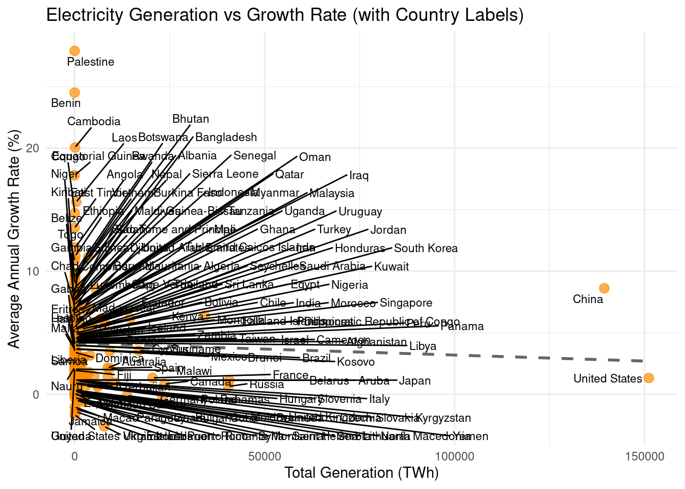

![]()
#import libraries
library(tidyverse)
library(here)
library(dplyr)
library(RColorBrewer)
library(ggplot2)
library(gt)
library(ggrepel)Electricity generation by countries
Introduction
This dataset (Data, 2025) provides historical electricity generation data TWh for countries and regions around the world, covering the year 1985 through 2024. This data was compiled to track energy production trends over time and support energy planning, policy evaluation, and investment analysis. By analyzing this dataset, we can identify which countries have scaled their electricity systems significantly and which ones have stagnated. This analysis is particularly relevant for global efforts toward energy access, sustainability, and emissions reduction.
Methods
The electricity generation dataset was compiled by Our World in Data based on original sources from Ember and the Energy Institute’s Statistical Review of World Energy (2025). It includes major post-processing by Our World in Data to standardize and harmonize national statistics. The dataset covers total electricity generated per country annually, measured in terawatt-hours, over the period 1985 to 2024. It was last updated in June 2025 and is intended to support global energy analysis and policy research.
Loading libraries
Reading data
energy_generation_by_countries <- read_csv(here("data/raw/capston_dataset.csv"))Data Exploratory Approach
Data summary
dim(energy_generation_by_countries)[1] 7635 4This dataset has 7653 rows and 4 columns.
Let’s visualize the first five rows to inspect the data.
head(energy_generation_by_countries)# A tibble: 6 × 4
Entity Code Year `Electricity generation - TWh`
<chr> <chr> <dbl> <dbl>
1 ASEAN (Ember) <NA> 2000 379.
2 ASEAN (Ember) <NA> 2001 405.
3 ASEAN (Ember) <NA> 2002 433.
4 ASEAN (Ember) <NA> 2003 458.
5 ASEAN (Ember) <NA> 2004 497.
6 ASEAN (Ember) <NA> 2005 523.The data looks good. There are some countries that are missing Code, but this is not important since we have the names of these countries.
The data types are also correct.
Let’s group data by country and summarize the statistics for exploration.
energy_summary <- energy_generation_by_countries |>
group_by(Entity) |>
summarise(
total_generation_TWh = sum(`Electricity generation - TWh`, na.rm = TRUE),
n_years = n()
) |>
arrange(desc(total_generation_TWh))
energy_summary# A tibble: 252 × 3
Entity total_generation_TWh n_years
<chr> <dbl> <int>
1 World 748571. 40
2 G20 (Ember) 473611. 25
3 High-income countries 412471. 39
4 OECD (EI) 382262. 39
5 Non-OECD (EI) 342776. 39
6 Asia 295142. 39
7 OECD (Ember) 264653. 25
8 Asia Pacific (EI) 262643. 39
9 Upper-middle-income countries 235229. 39
10 Asia (Ember) 234806. 25
# ℹ 242 more rowsAs you can see, there are aggregated data by region (OECD, High-income countries, etc) that are included in this dataset. In the next section, we will remove those in order to stick with only countries.
Let’s now see the electricity generation growth rate by countries
growth_rates <- energy_generation_by_countries |>
arrange(Entity, Year) |>
group_by(Entity) |>
mutate(
prev_year_generation = lag(`Electricity generation - TWh`),
annual_growth_rate = (`Electricity generation - TWh` - prev_year_generation) / prev_year_generation
) |>
summarise(
total_generation_TWh = sum(`Electricity generation - TWh`, na.rm = TRUE),
avg_annual_growth = mean(annual_growth_rate, na.rm = TRUE),
min_year = min(Year),
max_year = max(Year),
n_years = n() - 1
) |>
arrange(desc(avg_annual_growth))
growth_rates# A tibble: 252 × 6
Entity total_generation_TWh avg_annual_growth min_year max_year n_years
<chr> <dbl> <dbl> <dbl> <dbl> <dbl>
1 Palestine 11.1 0.279 2000 2022 22
2 Benin 7.68 0.245 2000 2023 23
3 Cambodia 111. 0.201 2000 2024 24
4 Equatorial … 16.8 0.178 2000 2023 23
5 Laos 426. 0.156 2000 2023 23
6 Congo 45.0 0.147 2000 2023 23
7 East Timor 5.84 0.135 2003 2023 20
8 Angola 193. 0.119 2000 2023 23
9 Ethiopia 197. 0.113 2000 2023 23
10 Vietnam 3593. 0.112 1985 2024 39
# ℹ 242 more rowsEnergy generation growth rate is high in developing countries. This shows that much effort is put recently to increase the generation capacity. We could interestingly compare such data with GDP data or any other wealth metric to understand better what is going on in each country.
Initial data Tidying
Removing aggregated data by region
As shown previously, our dataset includes aggregated data which can bias our analysis. So we have to remove them.
entity_to_remove <- c(
"World", "G20 (Ember)", "High-income countries", "OECD (EI)", "Non-OECD (EI)", "Asia", "OECD (Ember)", "Asia Pacific (EI)", "Upper-middle-income countries", "Asia (Ember)",
"G7 (Ember)", "North America (EI)", "North America", "Europe", "Europe (EI)", "Europe (Ember)", "North America (Ember)", "European Union (27)","EU (Ember)","Lower-middle-income countries","CIS (EI)", "South and Central America (EI)", "Latin America and Caribbean (Ember)","South America", "Middle East (EI)", "Middle East (Ember)", "Africa", "Africa (EI)", "ASEAN (Ember)", "Africa (Ember)", "Oceania", "Oceania (Ember)", "Eastern Africa (EI)","Western Africa (EI)", "Central America (EI)", "Middle Africa (EI)", 'Western Sahara'
)
energy_generation_by_countries <- energy_generation_by_countries |>
filter(!Entity %in% entity_to_remove)Now the aggregates have been remove, let’s recompile the energy_summary by countries and update the dataframe.
energy_summary <-energy_generation_by_countries |>
arrange(Entity, Year) |>
group_by(Entity) |>
mutate(
prev_year_generation = lag(`Electricity generation - TWh`),
annual_growth_rate = (`Electricity generation - TWh` - prev_year_generation) / prev_year_generation
) |>
summarise(
total_generation_TWh = sum(`Electricity generation - TWh`, na.rm = TRUE),
avg_annual_growth = mean(annual_growth_rate, na.rm = TRUE),
min_year = min(Year),
max_year = max(Year),
n_years = n() - 1
) |>
arrange(desc(total_generation_TWh))
energy_summary# A tibble: 215 × 6
Entity total_generation_TWh avg_annual_growth min_year max_year n_years
<chr> <dbl> <dbl> <dbl> <dbl> <dbl>
1 United Stat… 151136. 0.0132 1985 2024 39
2 China 139419. 0.0861 1985 2024 39
3 Japan 40711. 0.0113 1985 2024 39
4 Russia 40427. 0.00638 1985 2024 39
5 India 34261. 0.0639 1985 2024 39
6 Canada 23679. 0.00836 1985 2024 39
7 Germany 23045. -0.00176 1985 2024 39
8 France 20510. 0.0134 1985 2024 39
9 Brazil 16913. 0.0355 1985 2024 39
10 South Korea 14624. 0.0618 1985 2024 39
# ℹ 205 more rowsRenaming columns
Let lower the names of the columns and remove all the spaces
energy_generation_by_countries <- energy_generation_by_countries |>
rename_with(~ str_to_lower(.)) |>
rename_with(~ str_replace_all(., "[\\s\\-]+", "_")) |>
rename_with(~ str_replace_all(., "[^a-z0-9_]", ""))
energy_generation_by_countries# A tibble: 6,378 × 4
entity code year electricity_generation_twh
<chr> <chr> <dbl> <dbl>
1 Afghanistan AFG 2000 0.48
2 Afghanistan AFG 2001 0.69
3 Afghanistan AFG 2002 0.71
4 Afghanistan AFG 2003 0.91
5 Afghanistan AFG 2004 0.79
6 Afghanistan AFG 2005 0.82
7 Afghanistan AFG 2006 0.9
8 Afghanistan AFG 2007 1.01
9 Afghanistan AFG 2008 0.78
10 Afghanistan AFG 2009 0.89
# ℹ 6,368 more rowsSaving data
write_csv(energy_generation_by_countries, here("data/processed/energy_production.csv"))Results
Time coverage in data by each country
We want to check for what period of time there is electrical generation data for each country before performing other EDA.
# Create a new label column showing "start–end" range
energy_summary_labeled <- energy_summary %>%
mutate(range_label = paste(min_year, max_year, sep = "–"))ggplot(energy_summary_labeled, aes(y = reorder(range_label, min_year),
x = min_year,
xend = max_year)) +
geom_segment(aes(xend = max_year, yend = range_label),
size = 2, color = "darkgreen") +
labs(
title = "Electricity Generation Data Time Span",
x = "Year",
y = "Time Range (Start–End Year)"
) +
scale_x_continuous(breaks = seq(1985,2024, by=2), limits = c(1985,2024))+
theme_minimal() +
theme(axis.text.x = element_text(angle = 45, hjust = 1))Not all the countries have data for the 39-year period. the Figure 1 graph provides the span for each category. This will help to better understand trend later in our analysis.
Average annual growth vs total generation
Let’s look at the relationship between electricity generation growth vs total generation.
#Create a variable called growth_percent that converts annual growt in % format
energy_annotated <- energy_summary %>%
mutate(growth_percent = avg_annual_growth * 100) # Convert to percent
ggplot(energy_annotated, aes(x = total_generation_TWh, y = growth_percent)) +
geom_point(color = "darkorange", size = 3, alpha = 0.7) + # Bubbles
geom_smooth(method = "lm", se = FALSE, color = "gray40", linetype = "dashed") + # Trendline
geom_text_repel(aes(label = Entity), size = 3, max.overlaps = 100) + # Non-overlapping country labels
labs(
title = "Electricity Generation vs Growth Rate (with Country Labels)",
x = "Total Generation (TWh)",
y = "Average Annual Growth Rate (%)"
) +
theme_minimal()

From this Figure 2, it turns out that industrialized countries such USA, China, Japon, India, South Corea have low growth rate compared to developing countries. China generation capacity is growing faster that USA, yet they generation capacity is close to each other. Palestine has the biggest growth rate, though it generation still is low.
Let’s group countries by low midium, high and very high growth rate in the Table 1
# Step 1: Classify growth and assign sorting order
classified_growth <- energy_summary %>%
mutate(
growth_class = case_when(
avg_annual_growth <= 0.02 ~ "Low (≤ 2%)",
avg_annual_growth <= 0.10 ~ "Medium (>2% – ≤10%)",
avg_annual_growth <= 0.15 ~ "High (>10% – ≤15%)",
avg_annual_growth > 0.15 ~ "Very High (> 15%)"
),
class_order = case_when(
growth_class == "Low (≤ 2%)" ~ 4,
growth_class == "Medium (>2% – ≤10%)" ~ 3,
growth_class == "High (>10% – ≤15%)" ~ 2,
growth_class == "Very High (> 15%)" ~ 1
)
)
# Step 2: Group and list countries per class
growth_summary <- classified_growth %>%
group_by(growth_class, class_order) %>%
summarise(`List of Countries` = paste(sort(Entity), collapse = ", "), .groups = "drop") %>%
arrange(class_order) %>%
select(`Growth Category` = growth_class, `List of Countries`)
# Step 3: Render the table
gt(growth_summary) %>%
tab_header(title = "Countries by Growth Rate Category") %>%
cols_width(`List of Countries` ~ px(600))| Countries by Growth Rate Category | |
|---|---|
| Growth Category | List of Countries |
| Very High (> 15%) | Benin, Cambodia, Equatorial Guinea, Laos, Palestine |
| High (>10% – ≤15%) | Angola, Congo, East Timor, Ethiopia, Togo, Vietnam |
| Medium (>2% – ≤10%) | Afghanistan, Albania, Algeria, Antigua and Barbuda, Argentina, Armenia, Australia, Bahrain, Bangladesh, Belize, Bhutan, Bolivia, Bosnia and Herzegovina, Botswana, Brazil, British Virgin Islands, Brunei, Burkina Faso, Burundi, Cameroon, Cape Verde, Cayman Islands, Central African Republic, Chad, Chile, China, Colombia, Comoros, Costa Rica, Cote d'Ivoire, Croatia, Cyprus, Democratic Republic of Congo, Djibouti, Dominica, Dominican Republic, Ecuador, Egypt, El Salvador, Eritrea, Falkland Islands, Faroe Islands, French Guiana, French Polynesia, Gabon, Gambia, Georgia, Ghana, Gibraltar, Greece, Greenland, Grenada, Guatemala, Guinea, Guinea-Bissau, Guyana, Haiti, Honduras, Iceland, India, Indonesia, Iran, Iraq, Ireland, Israel, Jordan, Kenya, Kiribati, Kosovo, Kuwait, Lesotho, Liberia, Libya, Low-income countries, Luxembourg, Madagascar, Malawi, Malaysia, Maldives, Mali, Malta, Mauritania, Mauritius, Mexico, Mongolia, Montenegro, Morocco, Mozambique, Myanmar, Namibia, Nauru, Nepal, New Caledonia, Nicaragua, Niger, Nigeria, Oman, Pakistan, Panama, Papua New Guinea, Peru, Philippines, Portugal, Qatar, Reunion, Rwanda, Samoa, Sao Tome and Principe, Saudi Arabia, Senegal, Seychelles, Sierra Leone, Singapore, Solomon Islands, Somalia, South Korea, South Sudan, Spain, Sri Lanka, Sudan, Suriname, Taiwan, Tajikistan, Tanzania, Thailand, Tonga, Trinidad and Tobago, Tunisia, Turkey, Turkmenistan, Turks and Caicos Islands, Uganda, United Arab Emirates, Uruguay, Vanuatu, Zambia |
| Low (≤ 2%) | American Samoa, Aruba, Austria, Azerbaijan, Bahamas, Barbados, Belarus, Belgium, Bermuda, Bulgaria, Canada, Cook Islands, Cuba, Czechia, Denmark, Estonia, Eswatini, Fiji, Finland, France, Germany, Guadeloupe, Guam, Hong Kong, Hungary, Italy, Jamaica, Japan, Kazakhstan, Kyrgyzstan, Latvia, Lebanon, Lithuania, Macao, Martinique, Moldova, Montserrat, Netherlands, New Zealand, North Korea, North Macedonia, Norway, Paraguay, Poland, Puerto Rico, Romania, Russia, Saint Helena, Saint Kitts and Nevis, Saint Lucia, Saint Pierre and Miquelon, Saint Vincent and the Grenadines, Serbia, Slovakia, Slovenia, South Africa, Sweden, Switzerland, Syria, Ukraine, United Kingdom, United States, United States Virgin Islands, Uzbekistan, Venezuela, Yemen, Zimbabwe |
| NA | Niue |
Generation trend
Let’s look at the historical trend and see who which countries are showing positive pace.
# Step 1: Identify top 15 countries by total generation
top_15 <- energy_summary |>
arrange(desc(total_generation_TWh)) |>
slice(1:15) |>
pull(Entity)
# Step 2: Add color flag to the full dataset
energy_trend_labeled <- energy_generation_by_countries |>
rename(generation_TWh = electricity_generation_twh) |>
mutate(highlight = ifelse(entity %in% top_15, entity, "Other"))
# Step 3: Define distinct color palette for top 15 + gray for others
top_colors <- setNames(c(brewer.pal(12, "Set3"), brewer.pal(3, "Dark2")), top_15)
all_colors <- c("Other" = "gray80", top_colors)
# Step 4: Plot
ggplot(energy_trend_labeled, aes(x = year, y = generation_TWh, group = entity, color = highlight)) +
geom_line(alpha = 0.8, linewidth = 0.7) +
scale_color_manual(
values = all_colors,
breaks = top_15, # legend will only show the top 15
guide = guide_legend(override.aes = list(linewidth = 1.5))
) +
labs(
title = "Electricity Generation Trend by Country",
x = "Year",
y = "Electricity Generation (TWh)",
color = "Top 15 Countries"
) +
theme_minimal() +
theme(legend.position = "right")This Figure 3 graph show how China growth is significant, it is far way higher than USA that he crossed in around 2010. He is followed by USA which the trend seem flat and India which has taken off. Other developed countried like Russia, France, Japan, etc. also have a flat trend, no visible growth.
Summary statistics of China
As the chart above has depicted Chine and USA, let see what their summary statistics are in the table Table 2 below.
# Filter for China and USA
china_usa_summary <- energy_generation_by_countries %>%
filter(entity %in% c("China", "United States")) %>%
group_by(entity) %>%
summarise(
Start = min(year, na.rm = TRUE),
End = max(year, na.rm = TRUE),
`Nb Year` = n(),
`Total generation [TWh]` = sum(`electricity_generation_twh`, na.rm = TRUE),
`Avg generation [TWh]` = mean(`electricity_generation_twh`, na.rm = TRUE),
`Min generation [TWh]` = min(`electricity_generation_twh`, na.rm = TRUE),
`Max generation [TWh]` = max(`electricity_generation_twh`, na.rm = TRUE),
`Avg annual growth` = (last(`electricity_generation_twh`) / first(`electricity_generation_twh`))^(1/(`Nb Year` - 1)) - 1)
gt(china_usa_summary) %>%
fmt_percent(columns = `Avg annual growth`, decimals = 2) %>%
fmt_number(columns = matches("Generation"), decimals = 1)| entity | Start | End | Nb Year | Total generation [TWh] | Avg generation [TWh] | Min generation [TWh] | Max generation [TWh] | Avg annual growth |
|---|---|---|---|---|---|---|---|---|
| China | 1985 | 2024 | 40 | 139,418.6 | 3,485.5 | 410.7 | 10,072.6 | 8.55% |
| United States | 1985 | 2024 | 40 | 151,135.9 | 3,778.4 | 2,657.2 | 4,387.3 | 1.29% |
Conclusions
The analysis of historical electricity generation data from 1985 to 2024 reveals significant differences in both the scale and growth of energy production across the 215 countries. High-output nations such as China and the United States dominate in total generation, while several smaller economies demonstrate rapid growth path. By classifying countries into growth categories, we can distinguish between mature, expanding, and lagging electricity systems which offers insights for policymakers, investors, and energy planners. The dataset also highlights the uneven availability of historical data, which can affect some types of comparisons. Overall, this dataset provides a valuable foundation for understanding global electricity trends and important strategic decisions toward energy transition and access.
Summary of Findings
This project provide a glimpse to undertand the energy generation trend around the globe. The analysis is conducted on 215 countries and yield the following result:
China is leading the energy generation race globally, along with many of the developping countries such as Benin and Palestine.
India also showing a wake up trend.
With the current trend, China generation capacity will surpass the USA, as it has done for Japan, Russia, and other developed countries.
Questions and Next Steps
- How does electricity generation correlate with development indicators
- Are countries with low or negative growth facing structural challenges?
- What is the role of renewable energy in total generation and growth patterns
References
Data, O. W. in. (2025). Electricity generation. https://ourworldindata.org/grapher/electricity-generation.